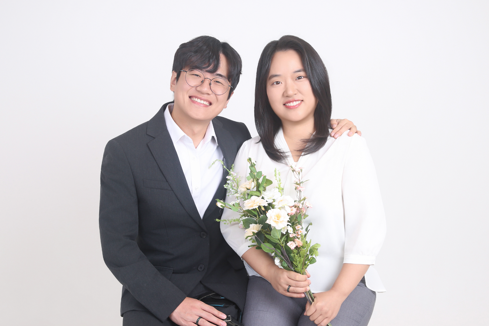

결혼식에 초대합니다
엄지 ♡ 이도연
2026년 10월 24일 토요일 17시
관악문화예절원
관악문화예절원
초대합니다
INVITATION
함께 웃고, 이따금 다투고, 다시 손을 잡으며 여러 번의 봄과 겨울을 지나왔습니다.
그 계절마다 곁을 지켜주신 분들이 계셨기에 오늘 이 자리를 마련할 수 있었습니다. 이제 두 사람이 서로의 가족이 되려 합니다.
귀한 걸음 하시어 저희의 첫날을 함께 지켜봐 주세요. 마주 앉아 따뜻한 밥 한 끼 나누어 주시면 그것으로 더없이 기쁘겠습니다.
우리 두 사람
우리 두 사람
FAMILY
신랑
엄지
엄지의 아버지엄봉호
엄지의 어머니박미성
신부
이도연
이도연의 어머니정나일선
함께한 날들
OUR DAYS
함께한 사진은 곧 올릴 예정입니다.
예식 순서
PROGRAMME
一
1부 · 전통혼례
17:00 – 18:00 · 관악문화예절원 마당
- 마당에서 진행되므로 굽이 낮은 신발을 권해드립니다.
- 예식 시작 전에 여유 있게 도착해 주세요.
二
2부 · 피로연
18:00 – 19:00 · 관악문화예절원 마당
- 한정식 뷔페로 준비했습니다.
- 신랑이 통기타를 연주하며 축가를 부릅니다.
비건 · 채식 메뉴
- 자세한 메뉴는 추후 안내드립니다.
동물성 재료 없이 따로 조리합니다. 필요하신 분은 참석 의사 폼에 알려주시면 인원수만큼 준비하겠습니다.
다시 만난 세계 — 소녀시대
전해주고 싶어 슬픈 시간이
다 흩어진 후에야 들리지만
눈을 감고 느껴봐
움직이는 마음, 너를 향한 내 눈빛을
특별한 기적을 기다리지마
눈 앞에선 우리의 거친 길은
알 수 없는 미래와 벽
바꾸지 않아, 포기할 수 없어
변치 않을 사랑으로 지켜줘
상처 입은 내 맘까지
시선 속에서 말은 필요 없어
멈춰져 버린 이 시간
사랑해 널 이 느낌 이대로
그려왔던 헤매임의 끝
이 세상 속에서 반복되는
슬픔 이젠 안녕
수많은 알 수 없는 길 속에
희미한 빛을 난 쫓아가
언제까지라도 함께 하는 거야
다시 만난 나의 세계
작사 김정배 · 작곡 Kenzie · 노래 소녀시대 · 2007년 발표
가사의 저작권은 원저작권자에게 있습니다.
三
3부 · 피로연(2차)
19:00 – · The Baer
- 편한 옷으로 갈아입고 오셔도 좋습니다.
- 인원 파악을 위해 참석 의사 폼에서 3부 참석 여부도 알려주세요.
안내 사항
GOOD TO KNOW
편하게 읽으시라고
편하게 읽으실 수 있도록 글씨 크기와 언어 선택 기능을 준비했습니다. 화면 위쪽 버튼으로 글씨를 150%까지 키우실 수 있고, 한국어와 영어를 오갈 수 있습니다. 스크린리더(안드로이드 TalkBack · 아이폰 VoiceOver)로 처음부터 끝까지 읽으실 수 있으며, 사진에는 설명을 붙였습니다. 마우스 없이 키보드만으로도 모든 기능을 쓰실 수 있습니다.
장애인 화장실 · 이동 안내
장애인 화장실 위치와 계단 없는 이동 경로는 확인 후 안내드리겠습니다. 도움이 필요하시면 예절원으로 문의해 주세요.
오시는 길
LOCATION
관악문화예절원
서울시 관악구 낙성대로3길 45 (봉천동)
① 2호선 낙성대역 4번 출구
② 마을버스 관악02번 탑승
③ 관악영어마을 하차
④ 횡단보도 건너 관악문화예절원
지하철
2호선 낙성대역 4번 출구로 나오세요.
버스
마을버스 관악02번을 타고 관악영어마을에서 내린 후 횡단보도를 건너세요.
주차
관악구민종합체육센터 주차장(유료, 공영) 이용가능, 단 주차공간이 매우 협소하오니 대중교통 이용을 권장드립니다.
참석 의사 전하기
RSVP
정성껏 준비할 수 있도록, 1·2·3부 참석 여부를 미리 알려주시면 감사하겠습니다.
이 화면에서 참석 여부를 알려주실 수 있습니다.
마음 전하실 곳
WITH THANKS
신랑에게
신부에게